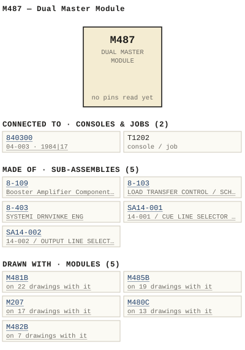

M487 — Dual Master Module
| Type | module |
| Category | SUMMING |
| Try it | simulator & front panel · download package (zip) |
| Earliest dated evidence | 1982|15 — manual issue date |
| Evidence | "MANUAL ISSUE "2 BS W DECEMBER 1982" in PUBLIC/Manuals + tech DOCUMENTS/Modules/Ward-Beck Systems - M487 Dual Master Module - www.WBSps.ca.pdf |
| Confidence | high |
| All years found | 1982|15 |
| Used in jobs | 840300 (1984|17), T1202 |
| Folder | DOCUMENTS/Done/Done - L1202A Console |
| Folder | DOCUMENTS/RECENT SCANS/WBSps.ca 20210320 - Scans |
| Folder | Modules/AMPLIFIERS/M481B |
Connections and circuit (ideal SPICE model)
Inputs, outputs, power and control as its own documents name them (no RTO-144 sheet for it: pin numbers only where the page gives them). Run the generator, turn the gain, watch the VU.
Pictures


M487.connections.svg 1982 - M487 - P01 - TOC.jpg
1982 - M487 - P01 - TOC.jpg M487 - P01 - TOC.jpg
M487 - P01 - TOC.jpg 1981 - 487-02-001 - DUAL MASTER MODULE SCHEMATIC - DRN P. Mahoney - ENG MRW - ISS 3.jpg
1981 - 487-02-001 - DUAL MASTER MODULE SCHEMATIC - DRN P. Mahoney - ENG MRW - ISS 3.jpg 1982 - M487 - 487-01-001 - DUAL MASTER MODULE FUNCTIONAL DIAGRAM.jpg
1982 - M487 - 487-01-001 - DUAL MASTER MODULE FUNCTIONAL DIAGRAM.jpg 1982 - M487 - 487-02-001 - DUAL MASTER MODULE SCHEMATIC.jpg
1982 - M487 - 487-02-001 - DUAL MASTER MODULE SCHEMATIC.jpg 1982 - M487 - 487-02-001 - OLHG DUAL MASTER MODULE.jpg
1982 - M487 - 487-02-001 - OLHG DUAL MASTER MODULE.jpg 1982 - M487 - 487-06-001 - DUAL MASTER MODULE COMPONENT LAYOUT ENG.jpg
1982 - M487 - 487-06-001 - DUAL MASTER MODULE COMPONENT LAYOUT ENG.jpg 1982 - M487 - 487-06-001.jpg
1982 - M487 - 487-06-001.jpg 1982 - M487 - 8-109-02-004.jpg
1982 - M487 - 8-109-02-004.jpg 1982 - M487 - 8-109-06-004 - BOOSTER AMPLIFIER COMPONENT LAYOUT.jpg
1982 - M487 - 8-109-06-004 - BOOSTER AMPLIFIER COMPONENT LAYOUT.jpg 1982 - M487 - 8-109-06-004 - BOOSTER AMPLIFIER.jpg
1982 - M487 - 8-109-06-004 - BOOSTER AMPLIFIER.jpg 1982 - M487 - B 487-01-001 - M487 - DUAL MASTER MODULE - FUNCTIONAL DIAGRAM.jpg
1982 - M487 - B 487-01-001 - M487 - DUAL MASTER MODULE - FUNCTIONAL DIAGRAM.jpg 1982 - M487 - BOOSTER AMPLIFIER SCHEMATIC.jpg
1982 - M487 - BOOSTER AMPLIFIER SCHEMATIC.jpg 1982 - M487 - Mixer Slot.jpg
1982 - M487 - Mixer Slot.jpg 1982 - M487 - Mixer Slot_small.jpg
1982 - M487 - Mixer Slot_small.jpg 1982 - M487 - P02 - 1-1.jpg
1982 - M487 - P02 - 1-1.jpg 1982 - M487 - P03 - 1-2.jpg
1982 - M487 - P03 - 1-2.jpg 1982 - M487 - P04 - 2-1.jpg
1982 - M487 - P04 - 2-1.jpg 1982 - M487 - P05 - 2-2.jpg
1982 - M487 - P05 - 2-2.jpg 1982 - M487 - P06 - 3-1.jpg
1982 - M487 - P06 - 3-1.jpg 1982 - M487 - P07 - 3-2.jpg
1982 - M487 - P07 - 3-2.jpg 1982 - M487 - P08 - 3-3.jpg
1982 - M487 - P08 - 3-3.jpg 1982 - M487 - P09 - 3-4.jpg
1982 - M487 - P09 - 3-4.jpg 1982 - M487 - P10 - 4-1.jpg
1982 - M487 - P10 - 4-1.jpg 1982 - M487 - P11.jpg
1982 - M487 - P11.jpg 1982 - M487 - P12 - 8-109-1-1.jpg
1982 - M487 - P12 - 8-109-1-1.jpg 1982 - M487 - P13 - 8-109-1-2.jpg
1982 - M487 - P13 - 8-109-1-2.jpg 1982 - M487 - P14 - 8-109-2-1.jpg
1982 - M487 - P14 - 8-109-2-1.jpg 1982 - M487 - P15 - 8-109-2-2.jpg
1982 - M487 - P15 - 8-109-2-2.jpg 1982 - M487 - P16 - 8-109-2-3.jpg
1982 - M487 - P16 - 8-109-2-3.jpg 1982 - M487 - P17 - 8-109-2-4.jpg
1982 - M487 - P17 - 8-109-2-4.jpg 1982 - M487 - P18 - 8-109-2-5.jpg
1982 - M487 - P18 - 8-109-2-5.jpg 1982 - M487 - Preamp.jpg
1982 - M487 - Preamp.jpg 1982 - M487 - Preamp_small.jpg
1982 - M487 - Preamp_small.jpg 19xx - DOC - 1202-02-012 - OOP SHE-DS.jpg
19xx - DOC - 1202-02-012 - OOP SHE-DS.jpg 19xx - DOC - 1202-02-017 - POSTS CHASSIS GROUND.jpg
19xx - DOC - 1202-02-017 - POSTS CHASSIS GROUND.jpg 19xx - DOC - 1202-04-007 - OSCILLATOR CUE-SOLO RE-ENTRY AND AUX LEVEL SCHEMATIC.jpg
19xx - DOC - 1202-04-007 - OSCILLATOR CUE-SOLO RE-ENTRY AND AUX LEVEL SCHEMATIC.jpg 19xx - DOC - L1202A - P12 - 1-9.jpg
19xx - DOC - L1202A - P12 - 1-9.jpg 19xx - DOC - L1202A - P25 - IV-1.jpg
19xx - DOC - L1202A - P25 - IV-1.jpg 19xx - DOC - 481-02-002 - CUE OSC RE-ENTRY MODULE SCHEMATIC.jpg
19xx - DOC - 481-02-002 - CUE OSC RE-ENTRY MODULE SCHEMATIC.jpg 19xx - DOC - 487-02-001 - DUAL MASTER MODULE SCHEMATIC.jpg
19xx - DOC - 487-02-001 - DUAL MASTER MODULE SCHEMATIC.jpg 19xx - 487-01-001 - DUAL MASTER MODULE FUNCTIONAL DIAGRAM - DRN P. Mahoney - ENG RKB - ISS 1 (2).jpg
19xx - 487-01-001 - DUAL MASTER MODULE FUNCTIONAL DIAGRAM - DRN P. Mahoney - ENG RKB - ISS 1 (2).jpg 1984 - 840300 - 840300-04-003 - DERS MACHINE CONTNOI PAMEL.jpg
1984 - 840300 - 840300-04-003 - DERS MACHINE CONTNOI PAMEL.jpg 1982 - T1202 - IMG_6008.jpg
1982 - T1202 - IMG_6008.jpg L1202A - P04(1).jpg
L1202A - P04(1).jpg L1202A - P04.jpg
L1202A - P04.jpg L1202A - P38 - Master Channels Schematic.jpg
L1202A - P38 - Master Channels Schematic.jpg L1202A - P44 - Power Distribution Schematic.jpg
L1202A - P44 - Power Distribution Schematic.jpg 1982 - 1202-02-012 - MASTER CHANNELS SCHEMATIC - DRN JP - ENG MRW - ISS 1.jpg
1982 - 1202-02-012 - MASTER CHANNELS SCHEMATIC - DRN JP - ENG MRW - ISS 1.jpg 1982 - 1202-02-017 - POWER DISTRIBUTION SCHEMATIC - DRN JP - ENG MRW - ISS 1.jpg
1982 - 1202-02-017 - POWER DISTRIBUTION SCHEMATIC - DRN JP - ENG MRW - ISS 1.jpg 1982 - M481B - 481-02-002 - CUE OSC RE-ENTRY MODULE SCHEMATIC.jpg
1982 - M481B - 481-02-002 - CUE OSC RE-ENTRY MODULE SCHEMATIC.jpg 19xx - 487-01-001 - DUAL MASTER MODULE FUNCTIONAL DIAGRAM - DRN P. MAHONEY - ENG RKB - ISS 1.jpg
19xx - 487-01-001 - DUAL MASTER MODULE FUNCTIONAL DIAGRAM - DRN P. MAHONEY - ENG RKB - ISS 1.jpgPrice history
| Year | Kind | Price | Listed as | Effective | Source |
|---|---|---|---|---|---|
| 2005|38 | used market value | 25.00 | M487 Dual Master | wbsps - website ARCHIVE/WBSPS 2008/ARCHIVE/old website/PriceGuide.htm | |
| 2005|38 | used market value | 100.00 | M487 Pre-amp | wbsps - website ARCHIVE/WBSPS 2008/ARCHIVE/old website/PriceGuide.htm | |
| 2006|39 | used market value | 25.00 | M487 Dual Master | wbsps - website ARCHIVE/WBSPS 2008/ARCHIVE/jan 2006 shell/priceguide.htm | |
| 2006|39 | used market value | 100.00 | M487 Pre-amp | wbsps - website ARCHIVE/WBSPS 2008/ARCHIVE/jan 2006 shell/priceguide.htm |
Pinout & connections
Dates found in the documents
| Year | Kind | Text | File |
|---|---|---|---|
| 1982|15 | manual issue date | MANUAL ISSUE "2 BS W DECEMBER 1982 |
1982 - M487 - Dual Master Module (2).pdf |
| 1982|15 | manual issue date | MANUAL ISSUE #2 DECEMBER 1982 |
1982 - M487 - Dual Master Module.pdf |
| 1982|15 | manual issue date | MANUAL ISSUE#2 DECEMBER 1982 |
1982 - M487 - P01 - TOC.jpg |
| 1982|15 | manual issue date | MANUAL ISSUE#2 DECEMBER 1982 |
M487 - P01 - TOC.jpg |
Physical manual inventory
| Item | Location | Status | Scanned |
|---|---|---|---|
| M487 Dual Master Module | PDF - Already scanned |
Documents (2)
| Year | File | |
|---|---|---|
| 1982|15 | 1982 - M487 - Dual Master Module (2).pdf | note |
| 1982|15 | 1982 - M487 - Dual Master Module.pdf | note |
Photos & scans (62)


Sub-assemblies & parts used (5)
| Item | What | Family | Year | How we know |
|---|---|---|---|---|
| 8-109 | Booster Amplifier Component Layout | Sub-assemblies (n-nnn) | 1974|7 | drawing filed with it |
| 8-103 | LOAD TRANSFER CONTROL / SCHEMATIC | Sub-assemblies (n-nnn) | 1979|12 | named in its manual |
| 8-403 | SYSTEMI DRNVINKE ENG | Sub-assemblies (n-nnn) | named in its manual | |
| SA14-001 | 14-001 / CUE LINE SELECTOR / SCHEMATIC | Circuit boards (SA14-nnn) | 1980|13 | named in its manual |
| SA14-002 | 14-002 / OUTPUT LINE SELECTOR / SCHEMATIC | Circuit boards (SA14-nnn) | 1980|13 | named in its manual |
Parts list — board 8-109 (1 parts)
From 1982 - M487 - P17 - 8-109-2-4.jpg, page 1 (scanned); also in timelines/data/bom.csv.
| Ref | Part | Value | Manufacturer | Mfr part no. |
|---|---|---|---|---|
| R4 | Resistor delete |
Parts list — board M487 (14 parts)
From 1982 - M487 - Dual Master Module.pdf, page 6 (scanned); also in timelines/data/bom.csv.
| Ref | Part | Value | Manufacturer | Mfr part no. |
|---|---|---|---|---|
| M487 | DUAL MASTER_MODULE | |||
| C1 | Capacitor uF/6 V Kemet | 330 | 1390F 337M006AS | |
| C5 | pF Philips | 47 | 2222-638-70479 | |
| C15 | Capacitor pF | 47 | 2222-638-70479 | |
| C17 | pF Aselco | 6800 | cQ92 MC-682m | |
| C21 | uF/10 V Kemnet | 68 | T3900686010A5 | |
| C25 | uF/25 V Philips | 22 | 476ETF22 | |
| R19 | Trim Pot Piher PT 10V (2.5) | 2K | ||
| R20 | Resistor I/4w 11K Philips | 596 | ||
| R3I | Resistor 1/4w 15K Philips | 57 | ||
| R45 | IKS | |||
| R63 | Resistor i/4w 15K | 596 | ||
| R17 | Trim Pot Piher PT 10V (2.5) | 2K | ||
| R31 | Resislor 1/4W 15K Philips | 570 |
Consoles & jobs it is connected to (2)
Their own drawings name this module.
| Job | Year | Drawing | Page |
|---|---|---|---|
| 840300 | 1984|17 | 1984 - 840300 - 840300-04-003 - DERS MACHINE CONTNOI PAMEL.jpg | 1 |
| T1202 | 1982 - T1202 - IMG_6008.jpg | 1 |
Named in other drawings & documents (11)
From the manuals
Each manual split into its sections. Text that is the same in many Ward-Beck manuals (warranty, address, standard notes) is kept once on the Boilerplate page and linked.
General description (3)
Description — 1056 words · 1982 - M487 - Dual Master Module.pdf, page 4
M487 DUAL MASTER MODULE The M487 Dual Master Module accommodates IWo seperale signal channels Tt is designed t0 receive the mixer feeds irom the summing buses of an audio mi xing console The [wo sections of the unlt process and amplify their signals to standard Iine levels . The outputs of the M487 supply the main outputs of the mixing console. Both channels operate in similar mnanner. The follow ing description refers specifically Lo SECTION Loput The signal originating from the external summing bus enters the module at Pins and of the connector and i5 applied t0 the sumi ing nodes af U1 and U2 . An external 600 ohm input is also provided and appears at pins and of the module connector. The nominal level of this external input 15 +8 dBm while the summing input operates 4[ -15 dBrn from 30k ohm current source U1 through u3 with their associaled components prov ide actively balanced inputs 45 wel as balanced output. The outpul of the preamplifier operates at nom inal Ievel of -10 dBm and appears at pins 10 and of the module connector Attenuator Insert The balanced INSERT point, provided between pins 10 & L and 11 & M of the connector permits the insertion of an external altenuator and the reference oscillator slating selector . QutPut The 8-109C output amplifier operates with gain of 39 dB Tt recovers the signal loss of the attenuator and provides additional gain to produce nominal output level of +8 dBm at the module outputs. The output from the 8-109C is divides Tnto three por(5 . The first (PGM 1) is an acitively balanced 600 ohm oulput prov 'iding the direct master output. The second (PGM 2 ) is low impedance output rouled to the T12024 output line selector, while the third provides an Isolated monitoring and metering output. 2-1
WAAD-BECK Bystems LTD; CIRcuiT DESCRIPT ION M487 DUAL MASTER MQDULE Power SuPply DecoUpl ing An active power supply decoup | ing network consisting of 01 through 06 provides isolation betwcen the module and the +/ - 25 volts power supply Transistors 03 and 06 mnonitor the supply current. In the eveni of excessive power supply demands, such 45 from cornponent failure or amplifier overdrive, the current flow ing through 01 and 04 will be Vimited_ CRI and CR2 guard against inadvertent application of reverse power supply voltages 2-2
WAAD-BECk systems LTD_ PARTS LiST M487 DUAL MASTER MODULE PART
8-109 AMPL IFIER SERIES The 8-109 series of amplifiers are utilized as an internal component within various WBS series of audio console modules. Each 8-109 amplifier miounts 45 plug-in assembly onto the mnodule motherboard- The 8-109 amplifier provides an actively balanced output with +30 dBm capability It is employed as an output or booster amplifier with either balanced or 4n unbalanced inpul _ Thc following specifications apply to the 8-109 series of amplifiers. Unit Input Gain 8-109 8-109A 8-109B 8-109C 8-1090 8-109L 8-109F 8-109G Balanced Unbalanced Balanced Balanced Unbalanced Balanced Balanced Balanced 15 dB db 18 dB 39 dB 29 dB 29 dB 33 dB 23 dB Frequency Responsc: +/ - 0.2 dB from 20 Hz [0 20 kHz . Noise: 108 dBm EIN Trom 20 Hz t0 20 kHz . Harmionic Distortion Less than 0 .1% THD from 20 Hz t0 20 Klz at +30 dBm output (typically Icss than 0.0270 at mid-band) Source Impedance: 600 onms or less, balanced 0r unbalanced. Input mpedances: Models with balanced input: Sk ohms minimum. 8-109A : 30k onms. 8-109D : 4700 ohms. Input Levels: Depending an gain Or particular modcl and system operating Ievels . (Refer 0 gain specifications above:) Output mpedance: Less than 100 ohms Load Impedance: 600 ohms, balanced. 8-109-1-1
WAAD-BECK systems LTD
8-109 AMPLIFIER SERIES Output Level : +30 dBm maximum Power Requirements; +/ = 21 .5 volts dc , 18 mA quiescent current. 65 MA at +30 dBm outpul. Ambient Temperature: t0 60 degrees Celsius. Dirensions: 3 .25" 3.38" 0.57" (83 mm 86 mm 15 mm / The 8-109 compriscs tWo arriplifier sections, one consisting ot 21 wiln 01 through 04, and the other of 22 with 05 through Q8 The linear integrated circuit 21 operates 45 preamplirier and buffer stage t0 drive the transistor outpul amplifier section. In the majority of the 8-109 models, the inputs of the two amplifier sections are intercorinected as cross coupled differential pair to provide balanced input. Alternately , in the casc of the 8-|09A and D, single-ended, unbalanced input is used The balanced input yields several input characteristics similar t0 those of an input transformer. Output Ievel remains constant when the input is fed from either balanced Or an unbalanced source Good comnON mode rejection is another feature of this type oT input configuration For amplifiers operating in the balanced mode, the value of R15 establishes the feed back ratio of the [Wo amplifier sections and thus controls the amplifier gain. When utilized in the unbalanced arrangement, the lower amplifier section (22 with 05 through 08) is used a5 the input section, with the input signal applied to pin E2 . Amplifier gain is determined by the values of R6 , RII and R12 . One half of the balanced outpul signal appears at pin E6 . The upper half of the amplifier (21 with 01 through 04) opcrates 45 unity gain inverting amplifier with E1 externally strapped to E6 . The output OT all models 0i the 8-109 scries is actively balanced and T5 brought out at pins Eb and E6 8-109-1-2
WAAD-BECK systems LTD PARTS List 8-109 AMPLIFIER SERIES 8-109 PART DESCRIPT ION MFG MFG PART NUMBER C1 C2 C3 C4 C5 Capacitor 33 uF/10 V Kemet T3900336M01045 10 uF/25 V T390C1OGMOZSAS 4 . 7 pF Philips 2222-638-09478 C6 C7 CB c9 C10 15 pF 10 pF 68 pF 10 uF/25 4.7 pF 2222-638-10159 2222-638-10109 2222-638-70689 T39OC IO6MOZ5AS 2222-638-09478 Keret Philips C1I C12 C13 C14 C15 15 pF 10 PF 68 pF 10 uF/25 220 uF/10 2222-638-10159 2222-638-10109 2222-638-70689 T390C 1O6MO25AS 1390F 227M01045 Kemet C16 C17 delete CRI CR2 CR3 CR4 Diode Fairchild INA148 01 02 43 04 05 Transistor National PN3569 PN3645 2N2102 2NL037 PN3569 06 07 08 PN3645 2N2102 2N403
- source: 1982 - M487 - Dual Master Module.pdf, p. 4
Description — 260 words · 1982 - M487 - P04 - 2-1.jpg, page 1
M4B7_DUAL MASTER MODULE The M487 Dual Master Module ccommodates [Wo seperale signal channels designed receive the mixer feeds irom the summing buses an audio mixing console The [wo sections the unit process and amplify their signals standard ine levels The outputs the M487 supply the main outputs the mixing console Both channels operate in similar Manner The following description refers specifically Lo SECTION Jnput The signal originating from the external summing bus enters the modu Pins and the connector and applied tne summing nodes and U2 .
An externa 600 ohm inpul also provided and appears pins and the module connector. The nominal level this external input dBm while the summing input operates 4[ -15 dBm Trom 30k ohm current source. through u3 with their associaled components prov ide actively balanced inputs 45 weli 4; balanced output. The outpul the preamplifier operates nominal Ievel -10 dBrn and appears pins and the module conneclor - Allenualor Insert The balanced INSERT point, provided between pins 10 and 11 & M the connector permits the insertion an external altenuator and the reference OSc Vator slating selector_ QUtPYt The 8-109C output amplifier operates with gain dB.
recovers the signal loss the ttenuator and provides additional gain produce nominal output level +8 dBm the module outputs The output from the 8-109C divides Tnto three por(5 The first (PGM 1 ) an acitively balanced 600 ohm oulpul providing the direct master output. The second (PGM low impedance output rouled the 112024 output Tine lector, while the third prov des isolated mon toring and metering output.
2-1
- source: 1982 - M487 - P04 - 2-1.jpg, p. 1
Description — 249 words · 1982 - M487 - P13 - 8-109-1-2.jpg, page 1
109 AMPLIFIER SERIES Output Level: +30 dBm maximum_ Power Requirements: 21 .5 volts dC, mA quiescent current MA +30 dBm outpul Ambient Temiperature: degrees Celsius Dimensions; 3.25" 3 . 38" 0.57"1 (83 Mm mm mm / _ The 8-109 compriscs two amplifier sections one consisting through 04, and the other 22 with 05 through Q8 wilh The linear integrated circuit operates a5 preamplrier and buffer stage dri ve the transi tor outpul Amplifier section.
the majority the B-109 models, the inputs the two amplifier sections are intercorinected as cross coupled differential pair provide balanced input. Alternately tne casc the 8-1094 and single-ended, unbalanced input used The balanced input yields severa input characteristics similar those an input transformer Output level remains constant when the input fed from either balanced an unbalanced source Good commnon mode rejection another feature this type input configuration For amplifiers operating thc balanced mode the value R15 establishes the feed back ratio the [Wo amplifier sections and thus controls the amplifier gain.
When utilized the unba anced arrangement tne lower amplifier section (22 with through 08) used the input section, with the input signal applied pin E2 Amplifier gain determined by the values R6 RII and R12 One half the balanced outpul Signal appears pin E6 . The upper half tne amplifier (z1 with through 04) operates 45 unity gain inverting amplifier with externally strapped E6 .
The output all models the 8-109 series is actively balanced and brought out pins E4 and E6 . 8-109-1-2
- source: 1982 - M487 - P13 - 8-109-1-2.jpg, p. 1
Specifications (2)
Technical Data — 247 words · 1982 - M487 - Dual Master Module.pdf, page 2
M487 DUAL MASTER MODULE Gain: 38 dB t/ - 0.5 dB (bridging gain) _ Frequency Response: 0/- 0.5 dB from 20 Hz t0 20 kHz . (tailored frequency response) Noise: 72 dB below +8 dBm output level (20 Hz to 20 kHz ) Harmonic Distortion: Less than 0.257 THD from 30 Hz to 20 kHz at +24 dBm output or less . Less than 0 .1% at kHz at +24 dBm outpul Source mpedances: Summing: External 30 ,000 ohms, balanced _ 600 ohms max imur, balanced. Input mnpedances: Summ ing External : Less than ohms. 600 ohms, balanced . Input Level : External 48 dBm nominal, +24 dBmn Maximum. Output Impedances: Out #1: Out #2: vu/Monitor Out: 600 ohms, balanced. 600 ohms, balanced 600 ohms, balanced . Load Impedances: Out #1: Out #2: VU/Monitor Out: 600 ohms, balanced 600 ohms, balanced Bridging, balanced (5000 ohms minimum) Output Level Out #1: Out #2: VU/Monitor Out: +8 dBm nominal +24 dBrn maximum. +8 dBm nominal, +24 dBm maximum. +8 dBrr nominal , +24 dBm maximum. 1-1
WARD-BECK BYBTemS LTD_
M487 DUAL MASTER MODULE Crosstalk Between Sections: 70 dB (30 Hz [0 15 kHz ) . Phasing: Input and Output terminals designated by numbers are in phase Power Requirements: +- 25 volts dc, 50 MA norninal 200 ITIA Maximum. Ambient Temperature: t0 60 degrecs Celsius. Dimensions: 1.6" wide 10.0" high 5.6" deep . (41 mm 254 mm 142 tritr ) Weighi: . Lbs (500 gms) 1-2
WAAD-BECK SySTeMS LTD CIRcULT
- source: 1982 - M487 - Dual Master Module.pdf, p. 2
Technical Data — 155 words · 1982 - M487 - P02 - 1-1.jpg, page 1
M4B7 DUAL MASTER MQDULE Gain: dB +/- 0.5 dB (bridging gain) _ Frequency Response: 0/ - 0.5 dB from 20 Hz 20 kHz . (tailored frequency response) Noise: dB below dBm outpui Ievel (20 Hz kHz) . Harmonic Distortion: Less than 257 THD from 20 kHz +24 dBm output Less than 0 .1% kHz outpul Hz less +24 dBm Source Impedances: Summing External 30 ,0oo ohms, balanced 600 ohms ma iMUri, balanced.
Input Imripedances: Summing: Externa Less than ohms 600 ohms, balanced Inpul Level External dBm nominal, +24 dBrn Maximum_ Output Impedances: Out #1: Out 72: vu/Mon tor Out: 600 ohms, balanced. 600 ohms balanced 600 ohms balanced Load Impedances Out #I: Out #2 VU/ Monitor Out 600 ohms, balanced. 600 ohms balanced. ba anced 5000 ohms Birdqing} . Output Level: Out #1 : Out #2 VU/ Monitor Out: dBm nominal dBm nomina +8 dBrri nominal +24 dBrn maximum +24 dBm maximum +24 dBm maximum
- source: 1982 - M487 - P02 - 1-1.jpg, p. 1
Parts list (text) (4)
Parts List — 599 words · 1982 - M487 - Dual Master Module (2).pdf, page 6
104487 DUAL MASTER MODULE
PART DESCRIPT ION " FO "FO PART NUMBER co Ca p a c ITor 330 uF!6 V ,-, T39OFJJ7MOO6AS C' " " " " C3 e- " ." " " . " . " C' " ,F Phi lips 2222~638_10479
... CO " " .." C' C' . " .., ,F " ", F " . C, CO. ." " " " 2222 ~638-09478
" ct t ... ea ,F .. " . 2222 -638- 70629 era " CU I C14 ) e etere crs Capa cllor .. " ,F. " 2222-638-10479
. cre " en COO ..." 6800 pF " esetee " . C092 -MC -682M
c rs . ••• ., F " 2222-638-09688 C'. C" en .•• .. .. uF ! IO V ,-, "
" ••
.. T39OO686010...5
C23 C,. ." .. " " " C25 " 22 uF/25 V P h il i p" 476E TF22
C" ..." ... " " C22 no .. ... " " " " C29 C30 . " " " " C" Diod e Molo.... la I N400J C'2 " " " a .c
" " '" " ps
C", " " " BS
ct Tr .. nllis tor Tex . I n " t. TIP 29B W
02 " Ni1l l o nal PNJ!>69 :// tp ht
3_ ,
WARO ·BECK S YSTEM S LTO .
PARTS L IST
M487 DUAL MAST ER MODUL E
PA RT DESCR I PT IO N "'G "'G PART NUMBER
0' T rll n " i" lor Na li a n a i PN3569 0' " Te x . I " ~t. TIP30B 0' " NlI tl a n ll l PN3645 0' " " "
"ea Re ~i ~to ..
" 1/4W 220K Phi lip s " 220K " " " "" " 220K 220K " " " " '" .,"ae " " ,'"" " " .,.W " " '" '" " "
." " " '" " " ." '" "" ." " " " '" "0
- source: 1982 - M487 - Dual Master Module (2).pdf, p. 6
Parts List — 98 words · 1982 - M487 - P14 - 8-109-2-1.jpg, page 1
8-109 AMPLIFIER_SERIES 8-109 PART DESCRIPT ION MFG MFG PARI NUMBER Capacitor 33 UF/10 Kemet T390D336M01045 C2 c3 C4 C5 10 uF/25 390C106MO25AS 4.7 pF Philips 2222 638-09478 pF 10 pF 68 pF 10 uF/25 4.7 pF 2222 638-10159 2222 638-10109 2222 638 70689 1390C 1O6MO25AS 2222-638-09478 Kemet Philips C10 C1I C12 C13 C14 C15 15 10 22222 638-10159 2222-638-10109 2222-638-70689 T390C106MO25AS T390F227M01045 uF/25 220 UF/10 Kemet C16 C17 delete CRI CR2 CR3 CRL Diode Fairchild IN4148 Transistor Nationa PN3569 PN3645 2N2102 2N4037 PN3569 05 PN3645 2N2102 2N4037 Resistor 1/4w 5% 47K Gkr 6k2 6K2 Philips 3 R5 8-109-2-1
- source: 1982 - M487 - P14 - 8-109-2-1.jpg, p. 1
Parts List — 62 words · 1982 - M487 - P17 - 8-109-2-4.jpg, page 1
8-109 AMPLIFIER SERIES 09D Al parts as per 8-109 except J5 noted below PART DESCRIPT ION MFG MFG PARI NUMBER C6 C1 C17 Capacitor 4.7 Philips 2222-638 09478 0.015 uF Aselcu c492-MC-100-153m R3} R4 R5 R6 Resistor delete Resi tor 1/4w 5% 4K7 18K 470 Philips Ra R9 R38 75K 1M 8-109E AI Parts 45 per 8-109 except J5 noted below PART
- source: 1982 - M487 - P17 - 8-109-2-4.jpg, p. 1
- also in: 1982 - M487 - Dual Master Module.pdf, p. 16
Drawings (23)
Each scan with its trace laid over it: the slider runs from the scan to the vector drawing. Click one to see it large and save it as SVG, DXF, KiCad, PDF or PowerPoint.
Dual Master Module Functional Diagramviewer
1982 - M487 - B 487-01-001 - M487 - DUAL MASTER MODULE - FUNCTIONAL DIAGRAMviewer
M487 / DUAL MASTER MODULE / FUNCTIONAL DIAGRAMviewer
DUAL MASTER MODULE / FUNCTIONAL DIAGRAMviewer
M487 / DUAL MASTER MODULE / SCHEMATICviewer
Dual Master Module Schematicviewer
Olhg Dual Master Moduleviewer
1982 - M487 - 8-109-02-004viewer
Oop She-Dsviewer
Posts Chassis Groundviewer
Cue Osc Re-Entry Module Schematicviewer
Dual Master Module Schematicviewer
Dual Master Module Component Layout Engviewer
1982 - M487 - 487-06-001viewer
Booster Amplifier Component Layoutviewer
Booster Amplifierviewer
Oscillator Cue/Solo Re-Entry And Aux Level Schematicviewer
Booster Amplifier Schematicviewer
Read from the drawing title blocks.
| Drawing | Title | Date | Drawn by | Checked by | Iss. | Source |
|---|---|---|---|---|---|---|
| B 487-02-001 | M487 / DUAL MASTER MODULE / SCHEMATIC | 1981|14 | P MAHONEY | RRL | 3 | file |
| — | Booster Amplifier | GEB (Gerry E. Bell) | B | file p.23 | ||
| — | Booster Amplifier Schematic | GEB (Gerry E. Bell) | U | file | ||
| — | file | |||||
| 1202-02-012 | Oop She-Ds | file | ||||
| 1202-02-017 | Posts Chassis Ground | file | ||||
| 1202-04-007 | Oscillator Cue/Solo Re-Entry And Aux Level Schematic | file | ||||
| 481-02-002 | Cue Osc Re-Entry Module Schematic | file | ||||
| 487-01-001 | Ohms Summing Input Pre Fader | BIU | file p.19 | |||
| 487-01-001 | Dual Master Module Functional Diagram | II | file | |||
| 487-02-001 | Olhg Dual Master Module | RAL | B | file | ||
| 487-02-001 | Dual Master Module Schematic | PAL | file p.20 | |||
| 487-02-001 | Dual Master Module Schematic | PAL | file | |||
| 487-02-001 | Dual Master Module Schematic | PAL | file | |||
| 487-06-001 | file | |||||
| 487-06-001 | Dual Master Module Component Layout | MRW | file p.21 | |||
| 487-06-001 | Dual Master Module Component Layout Eng | file | ||||
| 8-109-02-004 | file | |||||
| 8-109-06-004 | Booster Amplifier | GEB (Gerry E. Bell) | EXH | file | ||
| 8-109-06-004 | Booster Amplifier Component Layout | GEB (Gerry E. Bell) | 3 | file p.23 | ||
| 8-109-06-004 | Booster Amplifier Component Layout | GEB (Gerry E. Bell) | RUH | 3 | file | |
| B 487-01-001 | M487 / DUAL MASTER MODULE / FUNCTIONAL DIAGRAM | P MAHONEY | 1 | file | ||
| B 487-01-001 | DUAL MASTER MODULE / FUNCTIONAL DIAGRAM | P MAHONEY | 1 | file |